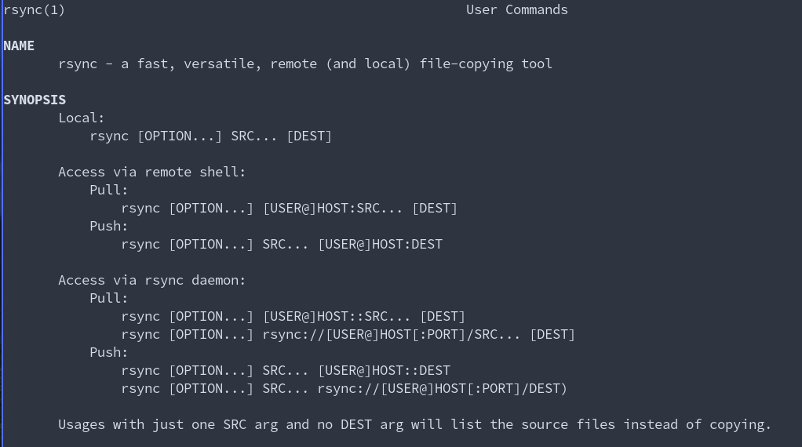

rsync
ABOUT:
rsync (remote synchronization) is a command line utility for data backups and synchronization of files and directories between two different locations. The locations may be with in a computer and an external harddrive or they even located remotely. It follows the ture unix philosphy and written using C programming language. It’s delata-transfer algorithm, which reduces the amount of data sent over the network by sending only the differences stands out and differentiate it from traditional cp command.
To know more or to explore different options available, visit man page from your terminal.
man rsync

USEFUL OPTIONS:
rsync is one of the versatile file copying tools. There are so many options which serves their own purpose. Some of the most useful options are:
- –archive, -a - archive mode, it’s a mixture of different options which includes recursion, symlinks restoration, preserves permissions, timestamps, groups and owners.
- –verbose, -v - writes the actions going on to a standard output.
- –update, -u - ignores alread transfered files unless they are newer.
- –delete - deletes the files that are in destination but not in source.
- -P - indicates progress.
- -z - compressess the data while transferring.
- -h - human readable
- -c - uses checksum to differentiate source and destination rather than time.
#copying the content of dir1 into dir2, by deleting contents that are not in dir1, #and using the checksum to find the differences. rsync -avc --delete dir1/ dir2/
A BASH SCRIPT:
I have created a script which intelligently copies the data from source to destination directory. You can find the script in my github repository. Sync 2 dirs intelligently!!!
REFERENCES:
- rsync man page
- rsync wiki
- rsync - cheat.sh - curl cheat.sh/rsync on CLI
- LearnLinuxTV - Transferring files with rsync
- Corey Schafer - How To Use The rsync Command